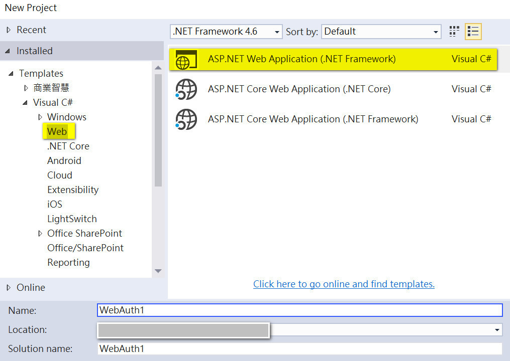
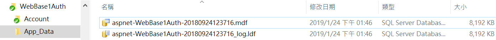
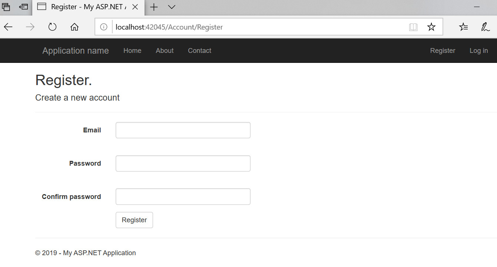
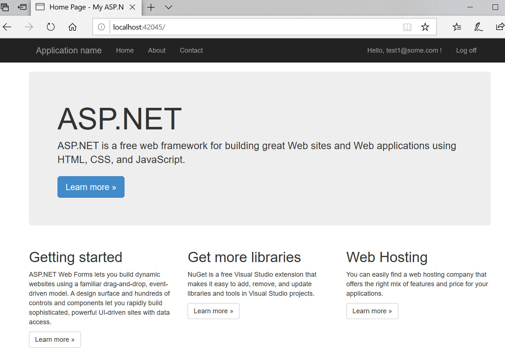
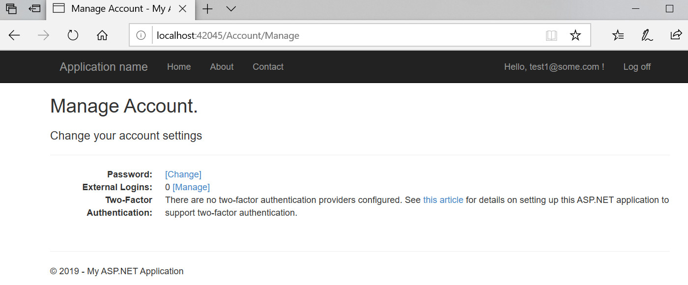
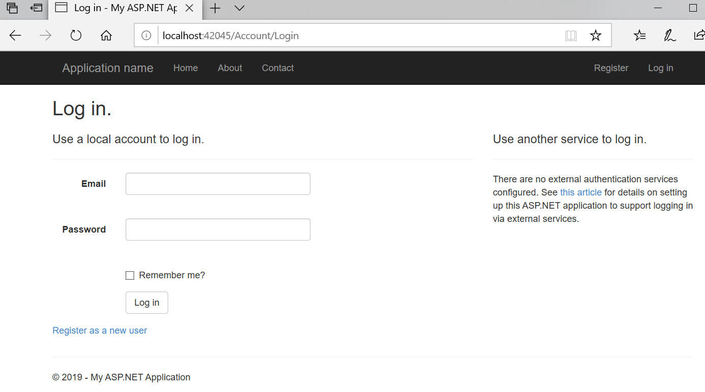
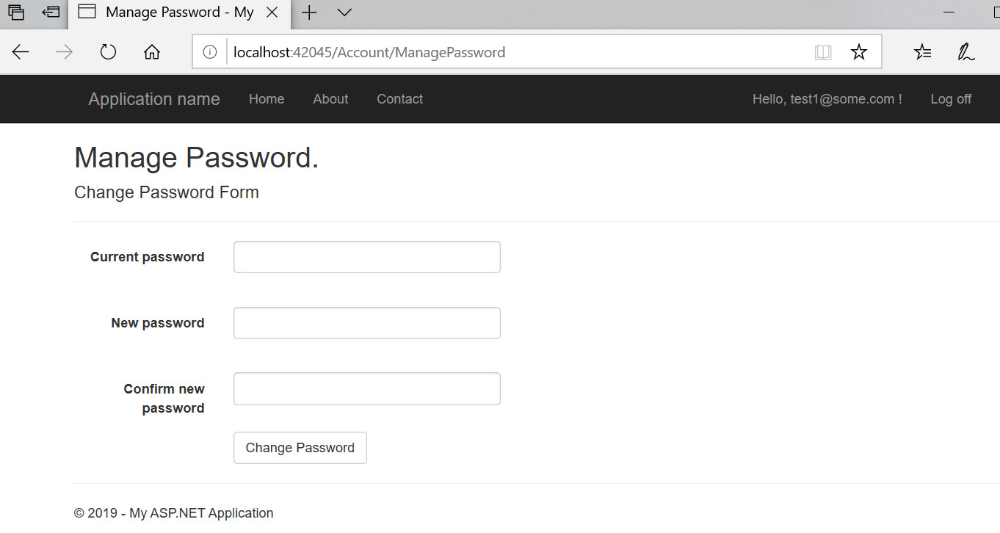

From:
hondachen@hotmail.com
Date:
2019-03-05
Subject:
Website template of ASP.Net Web Forms Individual User Account
以 Visual studio 2015, Update 3, 選擇 ASP.NET 4.6 Templates: Web Forms, Authentication: Individual User Account 樣式建立.
範例程式可自VS2015TemplateOriginal取得.
目錄:
主要步驟
1. 建立新專案 WebAuth1, Templates=Web, ASP.NET Web Application (.NET Framework).
2. Template 選擇 Web Forms, Authentication: Individual User Accounts.

資料庫
將網站專案編譯成功後, 經由 Entity Framework CodeFirst 的功能 可以在網站會員註冊畫面登記新帳號後, 自動在 App_Data\ 目錄中建立 MSSQLLocalDB 資料庫檔案 .MDF 及 .LDF 如下例 :
檢視 Web.config 檔案, 可以查到自動建立的 MSSQLLocalDB 資料庫連線字串設定如下:
<add name="DefaultConnection" connectionString="Data Source=(LocalDb)\MSSQLLocalDB;AttachDbFilename=|DataDirectory|\aspnet-WebBase1Auth-20180924123716.mdf;Initial Catalog=aspnet-WebBase1Auth-20180924123716;Integrated Security=True" providerName="System.Data.SqlClient" />
資料庫中, 主要存放 Table 如下:
完整的資料庫 SQL Script 可參考020040-AspNetScript-Original.sql. 或參考範例 建立資料庫 AspNetDB1 .
AspNetRoles
AspNetUserClaims
AspNetUserLogins
AspNetUserRoles
AspNetUsers
_MigrationHistory (Entity Framework 控制需要的檔案)
{kind=link}
自動建立的網站專案, 會利用 Entity Framework CodeFirst 功能, 檢查table _MigrationHistory, 當資料庫已經存在時, 就不會再產生新的資料庫檔案. 若需要將資料庫移植到 SQL Server, 可參考以上SQL Script, 移植到 SQL server 後, 再將連線字串改成如下:
<add name="DefaultConnection" connectionString="Data Source=127.0.01;Initial Catalog=DBAspNet1;Integrated Security=True" providerName="System.Data.SqlClient" />
ERD 如下:

測試畫面
會員註冊:
登入成功:

會員變更基本資料:

會員登入:

會員變更密碼:
